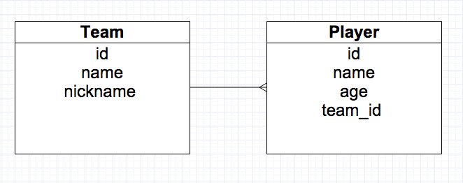
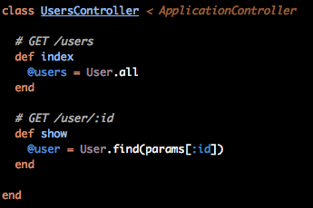
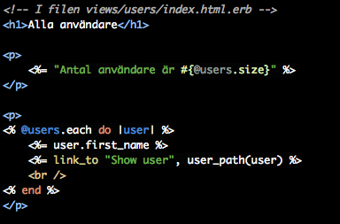
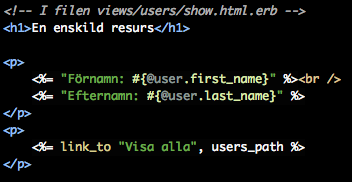
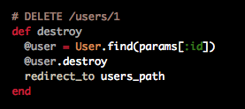
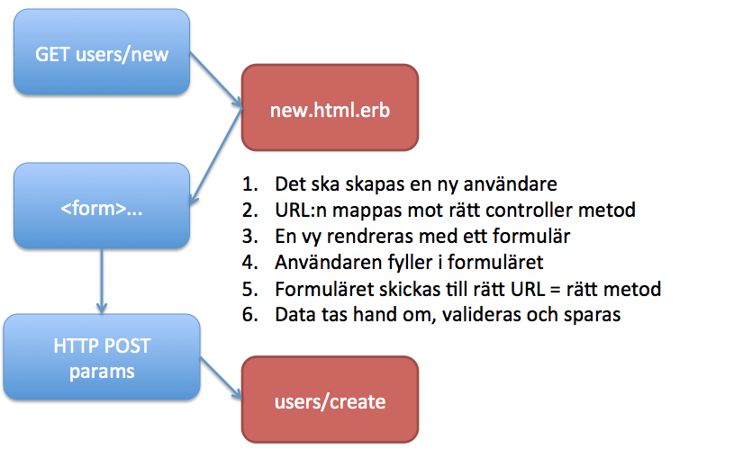
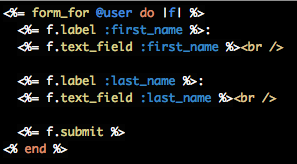
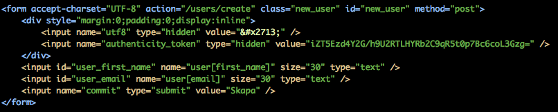
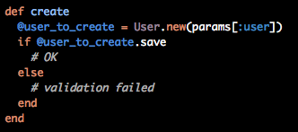

Webbramverk, 1DV450
Linnéuniversitetet, vt 2016
Ruby on Rails II

Några mer tester för modellen

- "En metod som returnerar en text om lagetsnamn och dess smeknamn"
- "När ett lag tas bort ska alla spelare i detta laget också tas bort" (dum logik i verkligheten)
Action Pack
- Action Dispatcher
-
Hur ska förfrågningar (requests) styras (route) till rätt controller
- Action Controller
-
Ansvar hur förfrågan ska behandlas (hanterar request, redirect, hämta data, rendrering)
- Action View
-
Ansvar för att rendera ut vyer (olika dataformat, layouts, templates, partial templates)
URL mapping - routes
- GET /teams - ska lista alla lagen
- GET /teams/1 - ska visa laget med id = 1
- GET /teams/spurs - Ska visa laget med nickname=spurs
- GET /teams/1/players - Ska lista alla spelare i laget med id=1
- POST /teams
- DELETE /teams/1
Vi kommer prata mer om hur URLer ska se ut och varför under REST-perioden.
Vart ska dessa anrop hamna...i vilken kontroller?

Exempel, routes.rb
# läggs till när du skapar en controller - ger direkt tillgång
# controller#action, root => webbroot => startsidan
root 'welcome#index'
# request /users mappas mot controllern user och dess action index
get 'teams' => 'teams#index'
post 'teams' => 'teams#create'
delete 'teams/:id' => 'teams#delete'
# Låt ramverket sköta det á la REST
resources :teams
# Genererar upp en URL-helper
get 'teams/info' => 'teams#info', as :team_info
# redirect_to(teams_info_path) - Läser ut rätt URL till resurser.
http://guides.rubyonrails.org/routing.html
Resource Routing: the Rails Default
# sköter routning för users enligt REST
resources :users
| HTTP Verb |
Sökväg |
Metod i controllern (action) |
Används för |
| GET |
/users |
index |
Listar upp alla användare |
| GET |
/users/new |
new |
Returenerar ett HTML-formulär |
| POST |
/users |
create |
Försöker skapa i databasen |
| GET |
/users/:id |
show |
Visar en användare |
| GET |
/users/:id/edit |
edit |
Returnerar ett formulär för ändring |
| PUT |
/users/:id |
update |
Updaterar (i db) en användare |
| DELETE |
/users/:id |
destroy |
tar bort en användare |
Test - routes
- GET /teams - ska lista alla lagen
- GET /teams/spurs - Ska visa laget med nickname=spurs
- GET /teams/1/players - Ska lista alla spelare i laget med id=1
- Skapa routes
- Peka på rätt metod i controllern
- Rendera data som JSON
URL Path helpers
En bra routing ger också möjlighet att använda så kallade url-helpers
# in the controller, returns /teams
redirect_to teams_path
#In the view, returns /teams/new
<%= link_to new_team_path %>
#returns /teams/:id/edit - (edit_team_path(@team) returns t.ex. /teams/10/edit)
edit_team_path(:id)
#returns /teams/:id - (team_path(@team) returns /teams/10)
team_path(:id)
använd rake routes i terminalen för att enkelt lista dina routes och URL-helpers
Redirect
# in teams_controller.rb
def create
@team = Team.new(team_params)
if @team.save
redirect_to @team # Blir /teams/:id
else
render 'new' # leter upp en vy som körs (state/felmeddelanden finns kvar)
end
end
- Ett HTTP ska skapas med statuskod "302 Found" och "location" satt till den nya URL:en (user/:id)
- All eventuell state-data försvinner
- Kör man render() som går man direkt till efterfrågad template
Hur får vi tag i Querystrings?
/teams?page=5&limit=100
# GET- och POST-variabler ligger i arrayen params
# i teams_controller.rb - Ta hand om dem i controllern och tilldela instansvariabler
@page = params[:page]
Att rendera ut en vy
Rendera ut en vy för /teams/1/players
- Erb - Embedded ruby (index.html.erb)
- render - metod i controllers som kallar på rätt vy
- Försök undvika "databasfrågor" i vyn
Hur renderar man en vy - Part II
# i app/controller/teams_controller.rb
def index
# Kommer leta efter template views/teams/other_view.html.erb
render('teams/other_view')
# Laddar in en template från en annan controller
def index
render('home/test')
end
CRUD application

I en vanlig CRUD-applikation vill vi kunna skapa, läsa, ändra och ta bort data!
Naturligtvis kan vi använda Active Record Querys för att hantera modellen
Vi kommer använda ramverkets REST-routing och "naming convention"
Vår applikation ska ha Users
resources :users (i routes.rb)
| HTTP Verb |
Sökväg |
Metod i controllern (action) |
Används för |
| GET |
/users |
index |
Listar upp alla användare |
| GET |
/users/new |
new |
Returnerar ett HTML-formulär |
| POST |
/users |
create |
Försöker skapa i databasen |
| GET |
/users/:id |
show |
Visar en användare |
| GET |
/users/:id/edit |
edit |
Returnerar ett formulär för ändring |
| PUT |
/users/:id |
update |
Uppdaterar (i db) en användare |
| DELETE |
/users/:id |
destroy |
tar bort en användare |
READ
Vi har två actions:
index: Listar alla resurser
show: Visar en enskild resurs



Delete

Create - att skapa en resurs
new: Laddar ett formulär som användaren kan fylla i
create: Tar användarens uppgifter och sparar (om det går bra)

Men hur gör man med formulär? HTML och använda "params"?
Validering och meddelanden? Behålla formulärvärden över postbacks
<form name="boring_form" method="POST" action="user/create">
<input type="text" name="first_name" />
<input type="text" name="last_name" />
<input type="submit" />
</form>
def create
@user = User.new
@user.first_name = params[:first_name]; # o.s.v.
if @user.save
redirect_to user_path(@user)
else
# error handling
end
end
Form helpers
Såklart ger oss ramverket mycket hjälp med allt som har med formulärhantering att göra!
form_tag & form_for
<%= form_tag users_path do %>
<%= label_tag :email %>
<%= text_field_tag :email, params[:email] %>
<%= label_tag :password %>
<%= password_field_tag :password %>
<%= submit_tag "Logga in", class: "btn" %>
<% end %>
form_for - (Forms For The Win)



Kapitel 7.2.1 i railstutorial.org
Strong parameters
Du måste specifikt tala om vilka egenskaper du vill kunna göra en mass-assignment på.
@user_to_create = User.new(params[:user])
# Mohahaha!
http://www.example.com/user/signup?user[name]=owned&user[admin]=1
Se film på kursens webbplats
The select helper
Många formulär vill använda en select-box/dropdown och i många fall vill man koppla den
mot en annan Model (ex. "lägg till ett city_id för en person")
# select-tagg där team_id är främmande nyckel i players-tabellen
<%= f.select :team_id,
options_from_collection_for_select(Team.all, :id, :name) %>
<select id="player_team_id" name="player[team_id]">
<option value="1">Tottenham Hotspur FC</option>
</select>
http://guides.rubyonrails.org/form_helpers.html#making-select-boxes-with-ease
Data validation
Hur validerar vi data så vi inte får felaktig data i databasen?
Validering kan ske i databas, på klienten, i controllern, i modellen
Active Record har inbyggt stöd för viss typ av validering i modellen
Visa fel som hör till formuläret
Naturligvis kan vi ha validering på det som ska in till databasen.
Då kan det hända vi får fel och vi måste visa detta för användaren
# i modell-klassen user.rb
# simple validation
validate :firstname,
:presence => {message: "Need to add a firstname!"},
:lenght => {minium: 2, maximum: 30, message: "Should be between 2 and 30 characters"}
# du hittar felen i errors (är en array)
User.errors
# Itterera genom alla errors
User.errors.full_message # Samling med felmeddelanden att visa upp
Självklart kan vi koppla dessa till flashnotiser eller felmeddelanden i formulären
När körs valideringen
När vi bygger en webbapplikation så kollas valideringen
när följande metoder körs på ett objekt
create
create!
save
save!
update
update_attributes
update_attributes!

create! kallas bang-method och genererar ett error istället för att returnera true/false
http://guides.rubyonrails.org/active_record_validations.html
Användarhantering - railstutorial.org
- Kapitel 6.3 - has_sequre_password
- Kapitel 7 och 8 - Hantering av användare och byggande av inloggningssystem
Railscast
- http://railscasts.com/episodes/270-authentication-in-rails-3-1
Massa demofilmer på kurshemsidan
 Denna presentation är licensierat under en
Creative Commons Erkännande 3.0 Unported Licens. (Där inte annat anges)
Denna presentation är licensierat under en
Creative Commons Erkännande 3.0 Unported Licens. (Där inte annat anges)